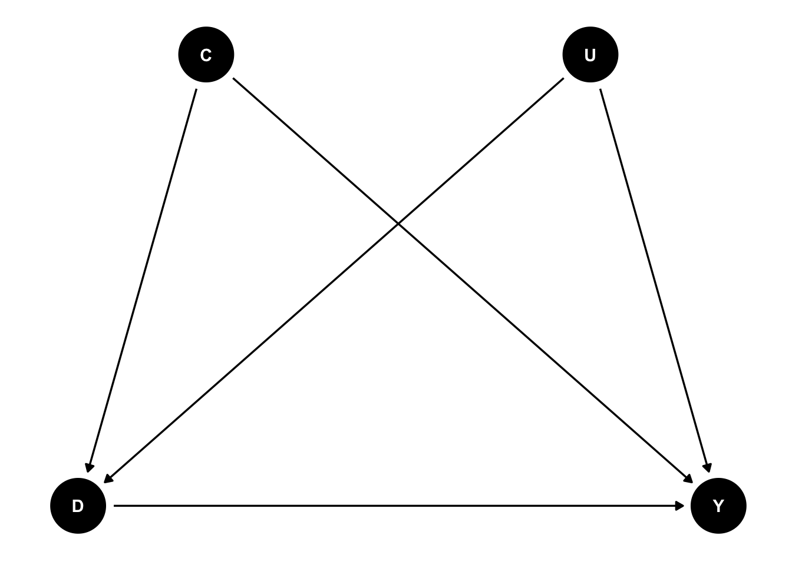

文献
Morgan, Stephen L. & Christopher Winship, 2014, Counterfactuals and Causal Inference: Methods and Principles for Social Research, 2nd ed., Cambridge: Cambridge University Press.
Overview
これまでの章：因果効果を一つの値に識別する（Point-Identify）ためのさまざまな戦略を議論
因果効果が識別できるかどうか怪しいとき
- バックドアを閉じる変数群を正確に特定できない
- 適切な操作変数の不在
- フロントドアの特定も難しい
3つのアプローチ
- 観察できない変数の分布に仮定を置く
- 仮定した分布が正しければ因果効果のPoint-Identification達成
- 実際には仮定が正しいことが保証されることはほとんどない
- Set Identification
- 弱い仮定を追加していくことによって、Causal Parameterについて何が言えるか？
- \(\leftrightarrow\) 識別のための強い（Untestableな）仮定を置く
- 成立しそうな弱い仮定を追加していくことにより、Causal Parameterが取りうる範囲を絞り込んでいく
- Sensitivity Analysis
- 識別仮定に違反しているとき、推定値がどれだけ変動するか
Distributional Assumptions and Latent Variable Selection-Bias Models
観察できない変数があったとしても、その分布を正しく特定できればPoint Identificationが達成できる
Heckmanのラムダ法
\(D\)が\(Y\)に与える影響を回帰分析によって推定するときに、セレクションバイアスを補正する
\[ \begin{eqnarray} D = 1 \; {\rm if} \; \tilde{D} \geq 0 \\ D = 0 \; {\rm if} \; \tilde{D} < 0 \\ \end{eqnarray} \]
として、以下の傾向スコアのようなものを考える
\[ \tilde{D} = Z\phi + U \]
\(U\)を直接観察できなくても\(U\)の分布に仮定をおけば条件付き期待値\(E[U | Z\phi, D]\)は求められる
\(U\)に正規分布を仮定すると\(U\)の条件付き期待値は以下の式で表される
\[ \begin{eqnarray} E[U | Z\phi, D = 1] = \frac{f(Z\phi)}{F(Z\phi)} \\ E[U | Z\phi, D = 0] = \frac{-f(Z\phi)}{1 - F(Z\phi)} \end{eqnarray} \] 一本めの式は、ヘックマンのサンプルセレクションモデルにおける逆ミルズ比（\(\lambda\)）？
これを用いて新たな説明変数（補正項）を作成し、\(D\)や他の統制変数とともに回帰式に投入して推定を行う
\[ D \times (\frac{f(Z\phi)}{F(Z\phi)}) \;\; {\rm and} \;\; (1 - D) \times \frac{-f(Z\phi)}{1 - F(Z\phi)} \]
- ラムダ法の問題点：分布の仮定に強く依存する
- 対応策：Semiparametricな方法
- 操作変数を用いる方法
- 潜在変数を用いる方法
- なかなか上手くいかないらしい
Set Identification with Minimal Assumptions
Manskiの”Set Identification”（または”Partial Identification”（部分識別）, “Analysis of Bounds”）
- 確からしい（Defendableな）弱い仮定を置くことで、平均因果効果について何が言えるか？
- 仮定の組み合わせにより、因果効果が取りうる範囲を絞っていくアプローチ
- extremeな因果効果の主張を、確かな仮定のもとでリジェクトしていくことができる
No-Assumptions Bounds
手元のデータの\(Y\)と\(D\)から、追加の仮定なしでATEの範囲をある程度絞り込むことができる
\[ \begin{eqnarray} E[Y^1 | D = 1] = a, E[Y^0 | D = 1] = b \\ E[Y^1 | D = 0] = c, E[Y^0 | D = 0] = d \\ \end{eqnarray} \]
とする。
- \(a\)と\(d\)はデータから観察できることとする（consistency）
- \(b\)と\(c\)はデータからはどうやっても観察できない値
上記から、ATEは以下のように書ける
\[ {\rm ATE} = \pi(a - b) + (1 - \pi)(c - d) \]
\(b\)と\(c\)に理論的に想定するPotential Outcomeの最大値・最小値を代入する
\[ \begin{eqnarray} {\rm max(ATE)} = \pi(a - {\rm min}(Y^D)) + (1 - \pi)({\rm max}(Y^D) - d) \\ {\rm min(ATE)} = \pi(a - {\rm max}(Y^D)) + (1 - \pi)({\rm min}(Y^D) - d) \\ \end{eqnarray} \]
ただし、観察されない値である\(E[Y^1 | D = 0]\)と\(E[Y^0 | D = 1]\)が\(-\infty\)から\(\infty\)をとる場合は絞り込み不能
- Potential Outcomeの定義の時点で理論的に範囲を絞る必要がある
- e.g. 人間の身長（身長は0cm以下にはならないし、300cmを超える人間は観察されていない）
Bounds Under Additional Weak Assumptions
No-Assumptions Boundsで絞り込んだATEを出発点とし、確からしい仮定を置くことによって範囲をさらに絞っていく
Monotone Treatment Response
「個人レベルの因果効果がすべて正の値をとる」（\(y^1 \geq y^0\)）という仮定
\(a \geq b\)、\(c \geq d\)となるので、\(b\)の最大値は\(a\)、\(c\)の最小値は\(d\)
\[ {\rm min(ATE)} = \pi(a - a) + (1 - \pi)(d - d) = 0 \]
ATEの下限は0になる
Monotone Treatment Selection
Positive Selectionを仮定：処置を受けた人の方がそれぞれのPotential Outcomeが高い
仮定より
\[ \begin{eqnarray} E[Y^1 | D = 1] \geq E[Y^1 | D = 0] \iff a \geq c \\ E[Y^0 | D = 1] \geq E[Y^0 | D = 0] \iff b \geq d \end{eqnarray} \]
なので
\[ {\rm max(ATE)} = \pi(a - d) + (1 - \pi)(a - d) = a - d = E[Y | D = 1] - E[Y | D = 0] \]
ATEの上限は、処置群と統制群の平均値差になる
Monotone Instrumental Variables
通常の操作変数の仮定はPoint Identificationを達成できる
- 操作変数\(Z\)はPotential Outcomeに直接影響しないという仮定（あってる？）
\[ \begin{eqnarray} E[Y^1 | X, Z = z'] = E[Y^1 | X, Z = z''] \\ E[Y^0 | X, Z = z'] = E[Y^0 | X, Z = z''] \\ \end{eqnarray} \]
上記を緩めた仮定はSet Identificationで活用できる
- IVがPotential Outcomeに直接影響するが、単調増加するという仮定
\[ \begin{eqnarray} E[Y^1 | X, Z = z''] \geq E[Y^1 | X, Z = z'] \\ E[Y^0 | X, Z = z''] \geq E[Y^0 | X, Z = z'] \\ {\rm when} \; z'' \geq z' \end{eqnarray} \]
仕組みが少々理解できず…（IVの章を先に読んでおくべきだった）
Sensitivity Analysis
処置のIgnorabilityの仮定について、違反している時に推定値や解釈がどれだけ歪むかを検討
感度分析の手順
\(C\)は観察されている共変量、\(U\)は観察されていない共変量とし、以下のDAGを考える
- Ignorabilityが成り立っていると仮定して、\(C\)を統制した上での\(D\)の\(Y\)に対する推定値を暫定的な因果効果とする
- \(U\)から\(D\)に対する効果と\(U\)から\(Y\)に対する効果の組み合わせを用意する
- 分析的な方法（？）やシミュレーションにより、\(U\)の効果の組み合わせにより、暫定的な推定値がどれだけ歪むかを計算する
- 暫定的な推定値が決定的に変化するような\(U\)の効果の組み合わせを特定する
- \(U\)の効果の組み合わせをもたらすような要因が実際にあるかどうかを理論的に考察する
Set IdentificationとSensitivity Analysis
どっちが望ましいのか？使い分けは？
Point Identificationのための仮定への違反が軽微な場合：Sensitivity Analysis
Manskiの感度分析批判
- Ignorabilityは仮定として強すぎる
- 経済学者として：outcomeがセレクションにおいて重要な役割を持つ（positive selectionしかり）
ただし、Set IdentificationとSensitivity Analysisを統合するアプローチも現れつつある。
疑問点など
- Set Identificationが生きそうな場面はどのような場面？
- 現状はSensitivity Analysisはよく推奨されているイメージがあるが、Set Identificationはあまり見ない
- APC分析への応用例(Fosse and Winship 2019a, 2019b)
- Point Identificationがそれほど重要でない：因果効果の点推定よりもAPCの相対的重要性が知りたい
- Partial Identificationに基づく2D-APCグラフの作成を提案
- 感度分析の方法について\(U \rightarrow D\)と\(U \rightarrow Y\)の効果の組み合わせを用意するのはわかるが、そこからどう分析やシミュレーションに繋げるのかがわからなかった
- \(U\)にあたる変数をどうやって作成するのか？（そもそも作成しないのか？）
- 関数系はどうするのか？線形？
- Set Identificationについて、サンプリングによるばらつきをどう評価するか？
- 文章を読んだ限りでは漸近一致性が根拠
- 「ATEの取りうる範囲」の信頼区間？
- 境界値（Bound）の信頼区間を算出するアプローチ(Masten, Poirier, and Zhang 2024)
References
Fosse, Ethan, and Christopher Winship. 2019a. “Analyzing Age-Period-Cohort Data: A Review and Critique.” Annual Review of Sociology 45 (1): 467–92. https://doi.org/10.1146/annurev-soc-073018-022616.
———. 2019b. “Bounding Analyses of Age-Period-Cohort Effects.” Demography 56 (5): 1975–2004. https://doi.org/10.1007/s13524-019-00801-6.
Masten, Matthew A., Alexandre Poirier, and Linqi Zhang. 2024. “Assessing Sensitivity to Unconfoundedness: Estimation and Inference.” Journal of Business & Economic Statistics 42 (1): 1–13. https://doi.org/10.1080/07350015.2023.2183212.